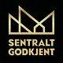

Nittedal · Hagan · siden 1994
Pålitelig tømrer i Nittedal
Nybygg, tilbygg og rehabilitering — utført av fagfolk med mesterbrev og sentral godkjenning. Vi leverer til avtalt tid og pris, og kundenes ønsker står i fokus uansett størrelse på jobben.

Mesterbrev og sentral godkjenning for ansvarsrett.

Det vi bygger
Vi stiller som totalleverandør innen nybygg, tilbygg og rehabilitering — og tar jobber i alle størrelser.
Nybygg
Fra tomt til ferdig hus. Vi tar ansvar for reisverk, isolasjon, kledning og detaljer.
Les mer 02Tilbygg
Mer plass uten å flytte. Tilbygg som passer huset og tomta.
Les mer 03Rehabilitering
Oppgradering av eldre boliger — med blikk for hva som er verdt å ta vare på.
Les mer 04Totalleverandør
Én ansvarlig for hele jobben, med fagfolk og leverandører samkjørt.
Les merKonstruksjonen blir satt sammen på plass — bjelke for bjelke. Slik jobber vi også på byggeplassen: i riktig rekkefølge, med mål som stemmer.
Fra faget
Reisverk, kledning og detaljarbeid. Bilder fra oppdrag og fra faget slik det faktisk ser ut.


Vi jobber stadig for at kunder oppfatter oss som en profesjonell og seriøs aktør som leverer til avtalt tid og pris.
Har du en jobb på beddingen?
Ta kontakt for en prat om prosjektet. Vi gir befaring og tilbud uten forpliktelser.